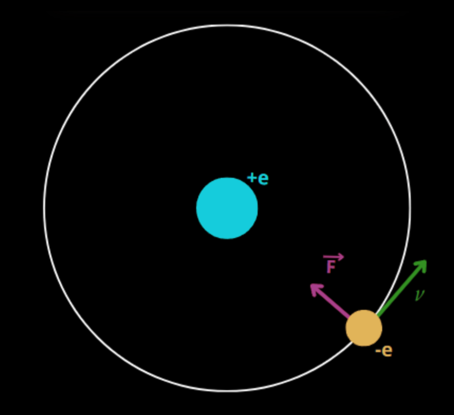
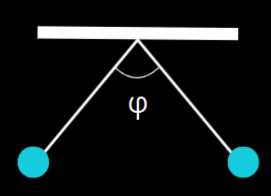

Just as Isaac Newton discovered in 1687, (with the universal law of gravitation) that all corps with mass are attracted, in 1785, Charles-Augustin de Coulomb discovered that all particles with charge are either attracted or repelled from each other. This made him state Coulomb’s Law, which describes the electrostatic force between two point charges.
Electrostatic Force also known as Coulomb’s force, is the force exerted between electrically charged objects.
\(\epsilon_0\): vacuum permittivity or electric constant. Even though, we’re only supposed to use this value in the vacuum (we should use \(\epsilon_0 \cdot \epsilon_r\) in other mediums), as air≃ 1, we normally use it that way.
In a hydrogen atom, an electron moves around a proton with an angular velocity of \(1 \times 10^16\) rad/s. Find the radius of the orbit. (\(e = 1.6 \cdot 10^{-19}, m_e = 9.11 \times 10^{−31}\: \text{kg}\))

Solution:-
\(v = \omega r\)
\(F_c = \frac{m_ev^2}{r}= k \frac{e^2}{r^2}\)
\(m_e \omega^2 r = k \frac{e^2}{r^2}\)
\(r = \sqrt[3]{k \frac{e^2}{m \cdot \omega^2}}\)
\(r = 1.36 \times 10^{-10} \: \text{m}\)
Two identical charges of +5 μC, each with a mass of 20 g, are suspended from a common point by two separate strings, as shown in the figure. Due to their mutual repulsion, the strings spread apart and form an angle \(\varphi\) between them. As they are in equilibrium, find the value of this angle.

\(mg=T \sin(\frac{\varphi}{2})\)
\(k \: \frac{q^2}{(2\: \sin (\frac{\varphi}{2}))^2} = T\: \cos (\frac{\varphi}{2})\)
\(k \: \frac{q^2}{(2 \: \sin (\frac{\varphi}{2}))^2 \: \cos(\frac{\varphi}{2})}= \frac{mg}{ \sin (\frac{\varphi}{2})}\)
\(\sin(\frac{\varphi}{2}) \: \cos(\frac{\varphi}{2})= \frac{kq^2}{mg}\)
Substituting the double angle formula:
\(\sin(\varphi)= \frac{kq^2}{2mg}\)
\(\varphi = 35^{\circ}\)